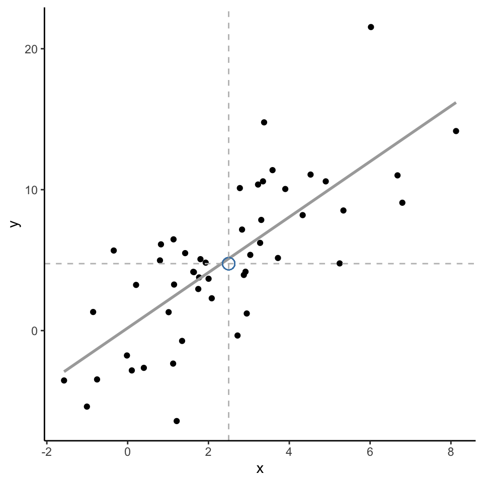
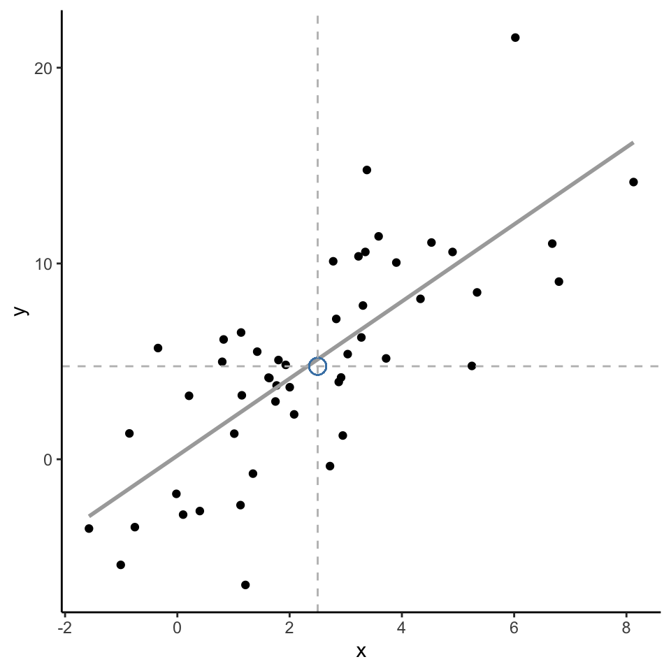

Model relation between…
Model relation between…

 Simple model cannot combine features
Simple model cannot combine featuresMain results

Week 3: Supervised Text Classification
Dr. Philipp K. Masur
are to be believed, the invention of artificial intelligence inevitably leads to apocalyptic wars between machines and their makers
It begins with today’s reality: computers learning how to play simple games and automate routines
They later are given control over traffic lights and communications, followed by military drones and missiles
This evolution takes a bad turn once computers become sentient and learn how to teach themselves….
Having no more need for human programmers, humankind is simply deleted…
Is this what machine learning is about?
(Stills from the movies “Ex Machina” and “Her”)


Machine learning is the study of computer algorithms that can improve automatically through experience and by the use of data
The field originated in an environment where the available data, statistical methods, and computing power rapidly and simultaneously evolved
Due to the “black box” nature of the algorithm’s operations, it is often seen as a form of artificial intelligence
But in simple term: Machines are not good at asking questions or even knowing what questions are
They are much better in answering them, provided the question is stated in a way that a computer can comprehend (remember the main challenge of text analysis?)
 Machine learning is most successful when it augments, rather than replaces, the specialized knowledge of a subject-matter expert.
Machine learning is most successful when it augments, rather than replaces, the specialized knowledge of a subject-matter expert.
Machine learning is used in a wide variety of applications and contexts, such as in businesses, hospitals, scientific laboratories, or governmental organizations
In communication science, we can use these techniques to automate text analysis!
Lantz, 2013
 Applying machine learning in practical context:
Applying machine learning in practical context:
1. What is machine learning?
2. Supervised text classification
3. Examples from the literature
4. Outlook and conclusion
Differences between supervised and unsupervised approaches.
In the previous lecture, we talked about deductive approaches (e.g., dictionary approaches)
These are deterministic and are based on text theory (e.g., happy -> positive, hate -> negative)
Yet, natural language is often ambiguous and probabilistic coding may be better
Dictionary-based or generally rule-based approaches are not very similar to manual coding; a human being assesses much more than just a list of words!
Inductive approaches promise to combine the scalability of automatic coding with the validity of manual coding (supervised learning) or can even identify things or relations that we as human beings cannot identify (unsupervised learning)
Algorithms build a model based on sample data, known as “training data”, in order to make predictions or decisions without being explicitly programmed to do so
Combines the scalability of automatic coding with the validity of manual coding (requires pre-labeled data to train algorithm)
Examples:
Algorithm detects clusters, patterns, or associations in data that has not been labeled previously, but researcher needs to interpret results
Very helpful to make sense of new data (similar to cluster analysis or exploratory factor analysis)
Examples:
Training algorithms to make good predictions!
We can now use machine learning models to classify text into specific sets of categories. This is known as supervised learning. The basic process is:
1. Manually code a small set of documents (say N = 1,000) for whatever variable(s) you care about
2. Train a machine learning model on the hand-coded data, using the variable as the outcome of interest and the text features of the documents as the predictors
3. Evaluate the effectiveness of the machine learning model via cross-validation (test it on new data/gold standard)
4. Once you have trained a model with sufficient predictive accuracy, apply the model to the remaining set of documents that have never been hand-coded (e.g., N = 100,000) or use it in the planned application (e.g., a spam filter detection software)
Suppose we would want to develop a tool to automatically filter spam messages
How would you do this if you could only use a dictionary?
Machine learning solution
The resulting “classifier” can then be integrated in a software tool that can be used to detect spam mails automatically
Machine learning is thus similar to normal statistical modeling
Learn \(f\) so you can predict \(y\) from \(x\):
y based on x.
Goal of ‘normal’ modeling: explaining/understanding
Goal of machine learning: best possible prediction
Note: Machine learning models often have 1000’s of collinear independent variables and can have many latent variables!
independent of language and topic; we only need consistently coded training material
can be connected to traditional content analysis (same operationalization, similar criteria in terms of validity and reliability)
efficient (analysis of very large samples and text corpora possible)
Requires large amounts of (manually) coded training data
Requires in-depth validation
How do these algorithms work?
There are many different “algorithms” or classifiers that we can use:
Most of these algorithms have certain hyperparameters that need to be set
Unfortunately, there is no good theoretical basis for selecting an algorithm
 Computes the prior probability ( P ) for every category ( c = outcome variable ) based on the training data set
Computes the prior probability ( P ) for every category ( c = outcome variable ) based on the training data set
Computes the probability of every feature ( x ) to be a characteristic of the class ( c ); i.e., the relative frequency of the feature in category
For every probability of a category in light of certain features ( P(c|X) ), all feature probabilities ( x ) are multiplied
The algorithm hence chooses the class that has highest weighted sum of inputs
Lantz, 2013
 Very often used machine learning method
Very often used machine learning method
Can be imagined as a “surface” that creates a boundary between points of data plotted in a multidimensional space representing examples and their feature values
Tries to find decision boundary between points that maximizes margin between classes while minimizing errors
More formally, a support-vector machine constructs a hyperplane or set of hyperplanes in a high- or infinite-dimensional space
Lantz, 2013
 Inspired by human brain (but abstracted to mathematical model)
Inspired by human brain (but abstracted to mathematical model)
Each ‘neuron’ is a linear model with activation function:
\(y = f(w_1x_1 + … + w_nx_n)\)
Normal activation functions: logistic, linear, block, tanh, …
Each neuron is practically a generalized linear model
Networks differ with regard to three main characteristics:
Universal approximator: Neural Networks with single hidden layer can represent every continuous function
Lantz, 2013
Sufficiently complex algorithms can “predict” all training data perfectly
But such an algorithm does not generalize to new data
Essentially, we want the model to have a good fit to the data, but we also want it to optimize on things that are specific to the training data set
Problem of under- vs- overfit
Regularization
Out-of-sample validation detects overfitting
In sum, we need to validate our new classifier on unseen data
Best practices and processes.
Models (almost) always overfit: performance on training data is not a good indicator of real quality
Solution
So… why don’t we do this with statistics?
This data is scraped from the “Vagalume” website, so it depends on their storing and sharing millions of song lyrics (not really representative or complete)
Many different songs, but not all types of music are represented in this data set
# A tibble: 161,289 × 10
# Groups: SLink [161,289]
ALink SName SLink Lyric Idiom Artist Songs Popularity Genre Genres
<chr> <chr> <chr> <chr> <chr> <chr> <dbl> <dbl> <chr> <chr>
1 /10000-maniacs/ More … /100… "I c… ENGL… 10000… 110 0.3 Rock Rock;…
2 /10000-maniacs/ Becau… /100… "Tak… ENGL… 10000… 110 0.3 Rock Rock;…
3 /10000-maniacs/ These… /100… "The… ENGL… 10000… 110 0.3 Rock Rock;…
4 /10000-maniacs/ A Cam… /100… "A l… ENGL… 10000… 110 0.3 Rock Rock;…
5 /10000-maniacs/ Every… /100… "Tru… ENGL… 10000… 110 0.3 Rock Rock;…
6 /10000-maniacs/ Don't… /100… "Don… ENGL… 10000… 110 0.3 Rock Rock;…
7 /10000-maniacs/ Acros… /100… "Wel… ENGL… 10000… 110 0.3 Rock Rock;…
8 /10000-maniacs/ Plann… /100… "[ m… ENGL… 10000… 110 0.3 Rock Rock;…
9 /10000-maniacs/ Rainy… /100… "On … ENGL… 10000… 110 0.3 Rock Rock;…
10 /10000-maniacs/ Anthe… /100… "For… ENGL… 10000… 110 0.3 Rock Rock;…
# … with 161,279 more rowsContains artist name, song name, lyrics, and genre of the artist (not the song)
The following genres are in the data set:
d %>%
ungroup %>%
filter(Artist == "Britney Spears" & SName == "...Baby One More Time") %>%
select(Artist, SName, Lyric, Genre)# A tibble: 1 × 4
Artist SName Lyric Genre
<chr> <chr> <chr> <chr>
1 Britney Spears ...Baby One More Time Oh baby baby. Oh baby baby (wow). Oh baby baby. How was I supposed to know?. That something wa… Pop d %>%
ungroup %>%
filter(Artist == "Drake" & SName == "God's Plan") %>%
select(Artist, SName, Lyric, Genre)# A tibble: 1 × 4
Artist SName Lyric Genre
<chr> <chr> <chr> <chr>
1 Drake God's Plan "Yeah they wishin' and wishin' and wishin' and wishin'. They wishin' on me, yuh. I been movin' calm, don't start … Hip …Many machine learning algorithms are non-deterministic
Random initial state and/or random parameter improvements - Even deterministic algorithm require random data split
Problem: research is not replicable, outcome may be affected
For replicability: set random seed in R: set.seed(123)
For valid outcome: repeat X times and report average performance
Corpus consisting of 116,190 documents and 8 docvars.
/10000-maniacs/more-than-this.html :
"I could feel at the time. There was no way of knowing. Falle..."
/10000-maniacs/because-the-night.html :
"Take me now, baby, here as I am. Hold me close, and try and ..."
/10000-maniacs/these-are-days.html :
"These are. These are days you'll remember. Never before and ..."
/10000-maniacs/a-campfire-song.html :
"A lie to say, "O my mountain has coal veins and beds to dig...."
/10000-maniacs/everyday-is-like-sunday.html :
"Trudging slowly over wet sand. Back to the bench where your ..."
/10000-maniacs/dont-talk.html :
"Don't talk, I will listen. Don't talk, you keep your distanc..."
[ reached max_ndoc ... 116,184 more documents ]# Set seed to insure replicability
set.seed(42)
# Sample rows for testset and create subsets
testset <- sample(docnames(music), nrow(d)/2)
music_test <- music %>%
corpus_subset(docnames(music) %in% testset)
music_train <- music %>%
corpus_subset(!docnames(music) %in% testset)
# Define outcome variable for each set
genre_train <- as.factor(docvars(music_train, "Genre"))
genre_test <- as.factor(docvars(music_test, "Genre"))The procedure is always the same
Split data into train and test set
We store the outcome variable (Genre) for each subset
Step 1: Tokenization (including removing ‘noise’) and normalization
Step 2: Removing stop words
Step 3: Stemming
Step 4: Create document-feature matrix (DFM)
Step 5: Remove too short (< 2 characters) and rare words
(Step 6: Transforms the dtm so that words with a high document frequency weight less)
Call:
textmodel_nb.dfm(x = dfm_train, y = genre_train)
Class Priors:
(showing first 3 elements)
Hip Hop Pop Rock
0.3333 0.3333 0.3333
Estimated Feature Scores:
take now babi hold close tri understand desir hunger fire breath
Hip Hop 0.001212 0.001709 0.001888 0.0006368 0.0003482 0.0008651 0.0003373 4.339e-05 2.898e-05 0.0003382 0.0002871
Pop 0.001912 0.002209 0.003575 0.0012459 0.0007566 0.0013738 0.0005118 1.710e-04 6.059e-05 0.0007605 0.0006797
Rock 0.002145 0.002460 0.002282 0.0013524 0.0007455 0.0015209 0.0006004 2.822e-04 1.040e-04 0.0010468 0.0008306
love banquet feed come way feel command hand sun descend hurt
Hip Hop 0.001688 1.010e-05 1.329e-04 0.001310 0.001060 0.001011 3.257e-05 0.0007522 0.0001953 8.027e-06 0.0003476
Pop 0.004675 7.163e-06 9.344e-05 0.002088 0.001887 0.002379 3.420e-05 0.0011299 0.0007235 2.252e-05 0.0007979
Rock 0.003456 1.822e-05 2.855e-04 0.002653 0.002062 0.002207 8.816e-05 0.0012946 0.0011366 5.312e-05 0.0007014
night belong lover us caus doubt alon ring
Hip Hop 0.0007309 0.0000717 0.0001143 0.0009473 0.001716 0.0001802 0.0003117 0.0003029
Pop 0.0016766 0.0002989 0.0005302 0.0012290 0.002201 0.0002322 0.0008661 0.0003434
Rock 0.0018035 0.0004535 0.0005678 0.0014138 0.001477 0.0002986 0.0012920 0.0004085To see how well the model does, we test it on the test (held-out) data
For this, it is important that the test data uses the same features (vocabulary) as the training data
The model contains parameters for these features, not for words that only occur in the test data
In other words, we have to “match” or “align” the train and test data
# Matching
dfm_test <- music_test %>%
tokens(remove_punct = T,
remove_numbers = T,
remove_symbols = T) %>%
tokens_remove(stopwords('en')) %>%
tokens_wordstem %>%
dfm %>%
dfm_match(featnames(dfm_train)) %>%
dfm_tfidf()
# Actual prediction
nb_pred <- predict(m_nb, newdata = dfm_test)
head(nb_pred, 2)/10000-maniacs/more-than-this.html /10000-maniacs/these-are-days.html
Rock Rock
Levels: Hip Hop Pop RockAs we can see in the confusion matrix, there are a lot of false positives and false negatives!
Overall Accuracy: 64.71%
Precision, Recall and F1-Score are not too good for each genre
Reference
Prediction Hip Hop Pop Rock
Hip Hop 7106 2501 3315
Pop 1012 7073 2849
Rock 1166 9659 23414When we refit the model with support vector machines, there are still a lot of false positives and false negatives
Overall Accuracy: 69.66%
However, Precision, Recall and F1-Score all have improved!
Reference
Prediction Hip Hop Pop Rock
Hip Hop 6509 1228 796
Pop 1682 10297 5117
Rock 1093 7708 23665bind_rows(cm_nb2, cm_svm2) %>%
bind_cols(Model = c(rep("Naive Bayes", 3),
rep("SVM", 3))) %>%
pivot_longer(Precision:F1) %>%
ggplot(aes(x = Genre,
y = value,
fill = Model)) +
geom_bar(stat= "identity",
position = "dodge",
color = "white") +
scale_fill_brewer(palette = "Pastel1") +
facet_wrap(~name) +
coord_flip() +
ylim(0, 1) +
theme_grey() +
theme(legend.position = "bottom")Task difficulty
Amount of training data
Choice of features (n-grams, lemmata, etc)
Text preprocessing (e.g., exclude or include stopwords?)
Tuning of algorithm (if required)
Scharkow, 2013
How is this used in research?
Van Atteveldt et al. (2021) re-analysised data reported in Boukes et al. (2020) to understanding the validity of different text classification approaches
The data incldued news from a total of ten newspapers and five websites published between February 1 and July 7, 2015:
They analyzed the paper using different methods and compared the results
Investigated performance results of all models
Manual coding still outperforms all other approaches
Supervised text classification (particularly deep learning) is better than dictionary approaches (not too surprising)
Particularly supervised learning gets better with more training data (more is more!)
Nonetheless strongly depends on quality of training data
Recommendation for dictionary: Apply any applicable off-the-shelf dictionaries and if any of these is sufficiently valid as determined by comparison with the gold standard, use this for the text analysis
Study examined the extent and patterns of incivility in the comment sections of 42 US news outlets’ Facebook pages in 2015–2016
News source outlets included
Implemented a combination of manual coding and supervised machine learning to code comments with regard to:
Despite several discernible spikes, the percentage of extremely uncivil personal comments on national-news outlets’ pages shifted only modestly
On conservative outlets’ Facebook pages, the proportions of both extremely uncivil and rude comments fluctuated dramatically across the sampling window
Su et al., 2018

Deep learning is part of a broader family of machine learning methods based on artificial neural networks with representation learning
Learning can again be supervised, semi-supervised or unsupervised
Generally refers to large neural networks with many hidden layers
Originally developed to deal with image recognition, now also adapted for text analysis
Use the combination of words, bi-grams, word-embeddings, rather than feature frequencies


Bidirectional Encoder Representations from Transformers (BERT)
A machine learning technique for natural language processing, pre-training and developed by Google
A deep learning model in which every output element is connected to every input element, and the weightings between them are dynamically calculated based upon their connection
BERT is pre-trained on two different tasks: Masked Language Modeling and Next Sentence Prediction.
There is a new package (very recently released) that allows to use such pre-trained, large scale language models in R
If you are interested check the package “text”: https://r-text.org/
But: Be mindful! Running a BERT model can take a long time and might even require a more powerful computer than yours!

Is it okay to use a model we can’t possibly understand?
Machine learning in the social sciences generally used to solve an engineering problem
Output of Machine Learning is input for “actual” statistical model (e.g., we classify text, but run an analysis of variance with the output)
Machine learning is a useful tool for generalizing from sample
It is very useful to reduce the amount of manual coding needed
Many different models exist (each with many parameters/options)
We always need to validate model on unseen and representative test data!
van Atteveldt, W., van der Velden, M. A. C. G., & Boukes, M.. (2021). The Validity of Sentiment Analysis: Comparing Manual Annotation, Crowd-Coding, Dictionary Approaches, and Machine Learning Algorithms. Communication Methods and Measures, (15)2, 121-140, https://doi.org/10.1080/19312458.2020.1869198
Su, L. Y.-F., Xenos, M. A., Rose, K. M., Wirz, C., Scheufele, D. A., & Brossard, D. (2018). Uncivil and personal? Comparing patterns of incivility in comments on the Facebook pages of news outlets. New Media & Society, 20(10), 3678–3699. https://doi.org/10.1177/1461444818757205
(available on Canvas)
Boumans, J. W., & Trilling, D. (2016). Taking stock of the toolkit: An overview of relevant automated content analysis approaches and techniques for digital journalism scholars. Digital journalism, 4(1), 8-23.
Günther, E. , & Domahidi, E. (2017). What Communication Scholars Write About: An Analysis of 80 Years of Research in High-Impact Journals. International Journal of Communication 11(2017), 3051–3071
Hvitfeld, E. & Silge, J. (2021). Supervised Machine Learning for Text Analysis in R. CRC Press. https://smltar.com/
Jürgens, P., Meltzer, C., & Scharkow, M. (2021, in press). Age and Gender Representation on German TV: A Longitudinal Computational Analysis. Computational Communication Research.
Lantz, B. (2013). Machine learning in R. Packt Publishing Ltd.
Scharkow, M. (2013). Thematic content analysis using supervised machine learning: An empirical evaluation using german online news. Quality & Quantity, 47(2), 761–773. https://doi.org/10.1007/s11135-011-9545-7
Su, L. Y.-F., Xenos, M. A., Rose, K. M., Wirz, C., Scheufele, D. A., & Brossard, D. (2018). Uncivil and personal? Comparing patterns of incivility in comments on the Facebook pages of news outlets. New Media & Society, 20(10), 3678–3699. https://doi.org/10.1177/1461444818757205
van Atteveldt, W., van der Velden, M. A. C. G., & Boukes, M.. (2021). The Validity of Sentiment Analysis: Comparing Manual Annotation, Crowd-Coding, Dictionary Approaches, and Machine Learning Algorithms. Communication Methods and Measures, (15)2, 121-140, https://doi.org/10.1080/19312458.2020.1869198
Van Atteveldt and colleagues (2020) tested the validity of various automated text analysis approaches. What was their main result?
A. English dictionaries performed better than Dutch dictionaries in classifying the sentiment of Dutch news paper headlines.
B. Dictionary approaches were as good as machine learning approaches in classifying the sentiment of Dutch news paper headlines.
C. Of all automated approaches, supervised machine learning approaches performed the best in classifying the sentiment of Dutch news paper headlines.
D. Manual coding and supervised machine learning approaches performed similarly well in classifying the sentiment of Dutch news paper headlines.
Van Atteveldt and colleagues (2020) tested the validity of various automated text analysis approaches. What was their main result?
A. English dictionaries performed better than Dutch dictionaries in classifying the sentiment of Dutch news paper headlines.
B. Dictionary approaches were as good as machine learning approaches in classifying the sentiment of Dutch news paper headlines.
C. Of all automated approaches, supervised machine learning approaches performed the best in classifying the sentiment of Dutch news paper headlines.
D. Manual coding and supervised machine learning approaches performed similarly well in classifying the sentiment of Dutch news paper headlines.
Describe the typical process used in supervised text classification.
Any supervised machine learning procedure to analyze text usually contains at least 4 steps:
One has to manually code a small set of documents for whatever variable(s) you care about (e.g., topics, sentiment, source,…).
One has to train a machine learning model on the hand-coded /gold-standard data, using the variable as the outcome of interest and the text features of the documents as the predictors.
One has to evaluate the effectiveness of the machine learning model via cross-validation. This means one has to test the model test on new (held-out) data.
Once one has trained a model with sufficient predictive accuracy, precision and recall, one can apply the model to more documents that have never been hand-coded or use it for the purpose it was designed for (e.g., a spam filter detection software)